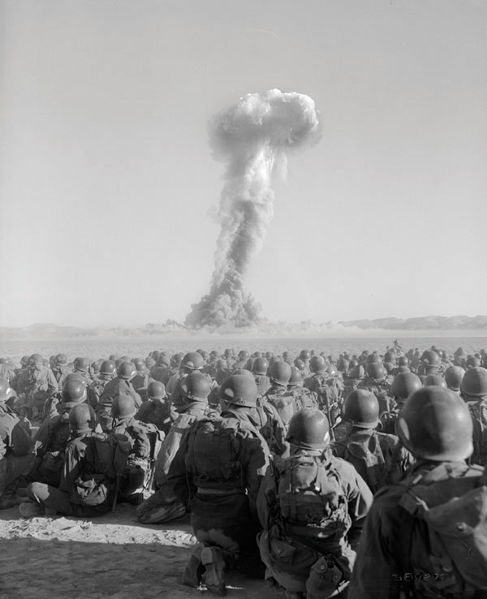
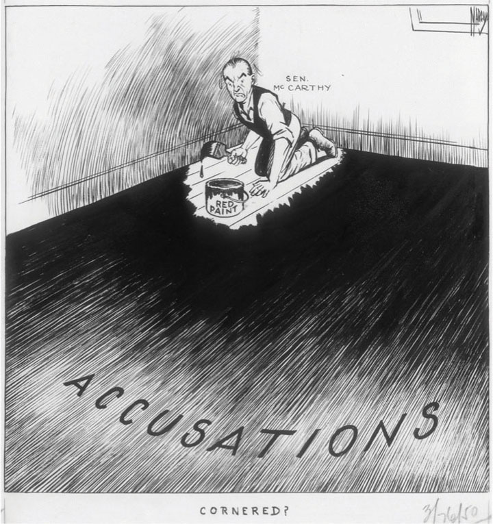
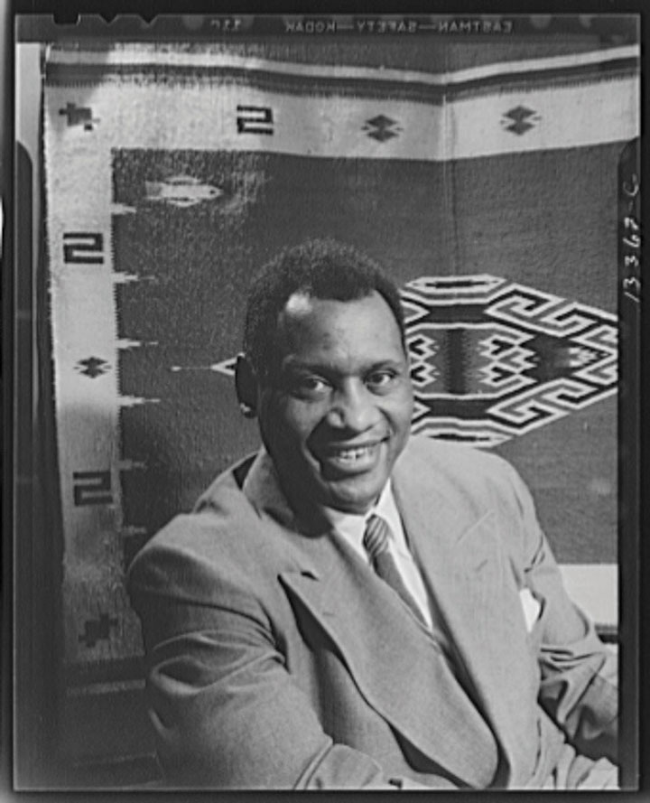
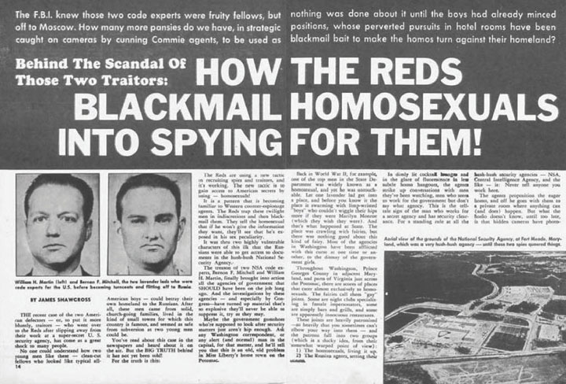
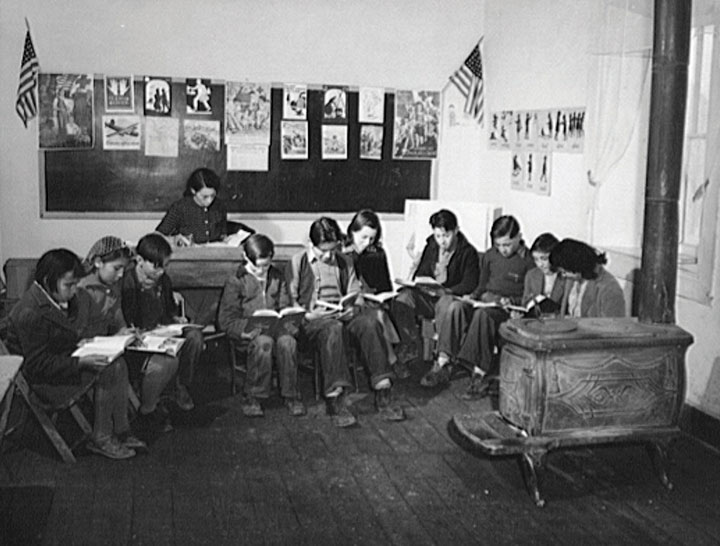

Even as America embraced its new role as the global industrial leader and entered an era of unprecedented abundance, scarcity continued to dominate the lives of one in five Americans living below the poverty line. For many of these, racial and ethnic discrimination compounded the problems of poverty. However, more and more Americans directly confronted the violations of their civil rights through direct action and the courts. The early Cold War period also witnessed the worst persecution of homosexuals since the colonial era and the second major attack on the extreme left in the last two generations. For cultural critics such as Arthur Miller, America’s attack on the left resembled the Salem Witch trials. And perhaps most ironic of all, the new military technologies that provided America’s global supremacy seemed to intensify existing concerns regarding global security.
Americans enjoyed their monopoly of power that came with being the sole possessor of atomic weapon technology, but they also recognized that the Soviet Union and other leading nations would soon achieve nuclear capabilities. As a result, many politicians and scientists considered the possibility of having the United Nations or some other international organization regulate the development of atomic weapons. At the same time, the creation of such an institution might limit the options of leading scientific nations such as the United States. In addition, limits on the types and numbers of weapons member nations could develop might provide an opportunity for rogue states and those who might secretly violate the treaties. Before any such organization was created, the Soviets stunned the world by successfully testing their first atomic weapon in August 1949. Because this was several years earlier than US scientists had predicted, many suspected that the Kremlin had somehow stolen America’s atomic secrets.
Americans were already aware that the Soviets had spies operating throughout the United States. In 1948, one of those spies identified the State Department’s Alger Hiss as a coconspirator. The spy led officials and reporters to a hollow gourd on his farm that was filled with microfilmed documents Hiss had allegedly typed and passed on to his Soviet contact. It was impossible to prove that these “pumpkin papers” as they became known were created by Hiss. In addition, the alleged incident had occurred so many years ago that Hiss could not even be tried for the crime of espionage. However, the nature of the accusations led to a trial to test Hiss’s loyalty, and the jury convicted Hiss of perjuryA criminal offense of lying while under oath to tell the truth..
Even more alarming to most Americans, Ethel and Julius RosenbergAn American couple of Jewish origins, the Rosenbergs were accused of passing on atomic secrets through a family member who was a confessed spy for the Soviet Union. The execution of the couple, who steadfastly denied any espionage, sharply divided many Americans. were found guilty of facilitating the transfer of nuclear secrets to Soviet physicists. The couple was executed together in the electric chair following a controversial and emotional trial that divided many Americans. For many, the nature of their crime warranted the punishment, while the couple’s membership in the American Communist Party validated the postwar persecution of Communists. For others, the association between the Rosenbergs and the Soviet Union was unclear and the charge of treason a willful exaggeration. For some, the government overstated the crimes of these minor figures to justify their actions in the Cold War. “The death sentence is not surprising,” Julius Rosenberg wrote his attorney. “There had to be a Rosenberg case because there had to be an intensification of the hysteria in America to make the Korean War acceptable to the American people.”
Figure 9.13
US soldiers observe a test explosion of a nuclear device in 1951. The army continues to maintain this nuclear test site in the Nevada desert about an hour’s drive from Las Vegas.
President Truman responded to the successful Soviet test by announcing plans to develop the hydrogen bomb, an atomic weapon utilizing an even more powerful second-stage explosion. American physicists had been secretly exploring the possibility of multiple-stage weapons as early as the first successful test of the original atomic bomb. Even those scientists that feared the incredible destructive power of the hydrogen bomb equally feared the consequences if the Soviet Union developed the weapon before the United States did. These individuals were relieved when Americans conducted the first fusion test in the South Pacific in November 1952, creating a crater one mile wide and 160 feet deep. The Soviet Union responded in August 1953 with its own successful test, after which the United States responded with a deliverable hydrogen bomb dropped on the Bikini Atoll in the Pacific. Remembered for the overwhelming bombshell to which it yielded, the devastated Atoll soon shared its name with an equally persuasive two-piece item altering life on American beaches in the summers to come.
US military strategists debated the implications of their powerful new weapon. They determined that the awesome destructiveness of the hydrogen bomb created its own disincentive against use in war. Theorists proposed that by building up a large nuclear arsenal, the United States could be relatively ensured against a nuclear attack through a theory known colloquially as Mutually Assured Destruction (MAD)A theory of nuclear deterrence that posited that no nuclear power would attack another nuclear power because of the likely consequence that any such attack would lead to the launch of enough nuclear weapons to destroy both nations.. The idea behind MAD was the assumption that if one or more nations possessed the ability to destroy one another and were completely committed to launching these weapons in the case of an attack, that neither side would ever attack the other because the consequence would be the annihilation of both nations. As a result, MAD contains a relied-on idea that possession of a nuclear arsenal provides defense through deterrence.
Americans were understandably concerned with ways to protect themselves should their leaders’ theories about deterrence prove overly optimistic. The Federal Civil Defense Administration established the Alert America campaign, partially to study methods of early detection of possible threats, and partially to reassure Americans that their government was doing everything in its power to protect them. Short films provided children with advice on how they could survive a Soviet nuclear attack. Schools were provided with comic books and cartoon characters to help them learn methods of self-protection.
Critics believed that the real intention of these cartoons was to scare children and parents in ways that would prevent Americans from questioning the assumptions of the Cold War. While there are reasons to support this analysis, there is also evidence that few Americans in the 1950s took these cartoons and their Saturday morning advice very seriously. Modern audiences still enjoy watching a cartoon turtle named Bert advise white children in a black-and-white film to “duck and cover” using desks and their own limbs to fend off nuclear blasts. However, more representative of the ways Americans sought to protect themselves are the efforts of local organizers to create thousands of community bomb shelters. Others got busy with shovels in their own backyards, creating their own shelters hidden by secret passageways so that unprepared neighbors would not swarm their refuge and its can-based supplies.
As the Soviet Union bore the brunt of the Nazi attack in the early years of World War II, the American Communist Party enjoyed its greatest popularity with approximately 80,000 members. Although this number rapidly declined following the war and was a microscopic percentage of the 150 million other citizens, some feared that these individuals might commit actions that could jeopardize the security of the nation. Recently declassified Soviet archival sources reveal the existence of more than one hundred spies operating in the United States. Few of these individuals were ever apprehended, but in 1945, federal officials discovered that a pair of State Department workers collaborated with an intelligence officer to pass classified information to Communist supporters. Later that year, an employee of the Soviet Embassy in Canada revealed the existence of espionage within the Manhattan Project. In reaction, a number of the president’s political opponents accused Truman as “soft on Communism” despite his administration’s increasingly severe language about the threat posed by the Soviet Union in Europe.
Truman increasingly believed that the actual threat of Communism spreading in ways that threatened the United States was often exaggerated. He also believed that the CIA, military, and other government agencies were acting effectively to promote both internal and external security against any potential Communist threat. However, for political reasons, he also went along with demands for stricter surveillance of government employees, issuing an executive order authorizing Loyalty Review Boards to investigate and dismiss any employee they deemed untrustworthy. The Attorney General’s office created a list of organizations that it deemed subversive and investigated any government employee it believed had ever been associated with any group on that list. In 1950, Patrick McCarran, a Democratic senator from Nevada, proposed a law requiring all members of the American Communist Party to register with the federal government. Believing restrictions on political affiliation violated constitutional standards of freedom of speech and assembly, Truman vetoed the law. “In a free country,” Truman famously responded, “we punish men for the crimes they commit, but never for the opinions they hold.” Congress passed the law over the president’s veto, with support from both Republican and Democratic legislators.
In February 1950, amid news of Alger Hiss’s conviction and reports of a former Soviet spy’s arrest, Wisconsin Senator Joseph McCarthy addressed a Republican women’s group in Wheeling, West Virginia. The senator played to his audience’s legitimate concerns about possible Soviet spy networks by alleging that he had compiled a list of 205 “card-carrying Communists” who worked for the State Department. In reality, he had no such list, and when pressured to disclose names, McCarthy stalled, hedged, revised the number to 57, and then claimed that America’s enemies had changed his more vague assertion that Communists were working in the State Department into something they knew could not be proven. The experience taught the senator two things: (1) accusations work best when they are nonspecific and (2) allegations of this sort were political gold. McCarthy’s technique of accusation without evidence typified the methods of many during this era. As a result, historians use the term McCarthyismA blanket term referring to both the anti-Communist hysteria of the postwar period and the techniques used by Wisconsin senator Joseph McCarthy. The senator repeatedly issued accusations of disloyalty against numerous individuals and government agencies without providing any evidence of his claims. to refer to the unsubstantiated accusations of disloyalty issued by McCarthy and other demagogues throughout the Cold War period.
McCarthy’s sudden prominence led to his appointment to the House Committee on Un-American Activities (HUAC)A congressional committee tasked with investigating alleged instances of subversion and disloyalty among federal employees. After World War II, the committee investigated a number of Hollywood actors, writers, poets, athletes, and other influential private citizens. Although relatively few of those called before the committee were imprisoned, the possibility of being investigated tended to restrict criticism of the government during the postwar era.. McCarthy and HUAC rose from obscurity in 1947 when they launched an investigation into charges of Communist influence in Hollywood. Scores of actors, writers, and directors were required to testify. Ten believed they were being forced to appear before a witch trial and refused to cooperate. These members of the “Hollywood Ten” thought they could defend their refusal to testify under the Fifth Amendment, but they were still sent to prison on various charges. A much larger number actors and writers were blacklisted based on expressions of sympathy for Communists, previous political associations, and in some cases, gossip spread by others. Among the blacklisted were Orson Welles and Leo Penn, father of actor Sean Penn. Americans were encouraged to boycott films by British actor Charlie Chaplin, who was forbidden to enter the United States for nearly two decades.
Figure 9.14
This political cartoon portrays Senator McCarthy as being “cornered” by his own unsubstantiated accusations. McCarthy regularly accused individuals of being disloyal or of being members of the Communist Party but was rarely able to provide evidence of such claims.
African American actor Paul RobesonA multisport star athlete and top student at Rutgers University, Robeson went on to graduate law school at Northwestern, play football in the NFL, and star in Shakespearean drama. Most famous for his singing, Robeson toured the world and spoke forcibly about American race relations. These comments and his embrace of Communism led to numerous investigations and restrictions being placed on him by the US government. suffered the reverse fate, having his passport revoked in 1950 to prevent him from leaving the United States. While some sharing his point of view were deported, Robeson was forbidden to leave the country because when he traveled abroad, he spoke candidly about US race relations. Robeson’s blistering but factual accounts of lynching and Jim Crow were utilized by Soviet agents as they sought to demonstrate the hypocrisy of America and win converts to their doctrines throughout the globe.
Robeson defended socialism partially because he believed that a more equal distribution of wealth would help to erode racism, and partially because many leading socialists were also supporters of civil rights initiatives. Many black leaders in the early twentieth century believed that the communal values of socialism and its enforced economic egalitarianism would help to promote racial and class equality in the United States. When members of the HUAC investigating committee demanded to know his political membership, the former pro football player extended a challenge for the congressmen to follow him into the voting booth and see for themselves. And, unlike many of Robeson’s friends who distanced themselves from the accused performer, Robeson made a point of defending his friends even while being investigated by HUAC.
Figure 9.15
Paul Robeson lettered in numerous sports and graduated at the top of his class at Rutgers and Columbia University. He also played professional football in the NFL and was an attorney, a leading baritone, and an international Shakespearean actor. However, his career was curtailed by the federal government after he began speaking critically about race relations.
After being questioned about the loyalty of Benjamin Davis, a Morehouse and Harvard graduate who wrote for the socialist newspaper the Daily Worker, Robeson responded that he was proud of his friendship with the often-controversial Davis. “I say that he is as patriotic an American as there can be, and you gentlemen belong with the Alien and Sedition Acts,” Robeson exclaimed, likening the prosecution of communists to the late eighteenth century law that criminalized dissent. “You are the nonpatriots,” Robeson continued, “and you are the un-Americans, and you ought to be ashamed of yourselves.”
Few Americans were willing to express their opinions as forcefully as Robeson and Davis. While many historians today celebrate their impassioned defense of free speech, it is important to remember that these men often infuriated even the most liberal Americans of their day with their continued defense of Joseph Stalin and others who are now considered tyrants. As a result, it is often difficult to arrive upon simple conclusions about the meaning of McCarthyism in American history. Clearly one of the long-term consequences of McCarthy’s and Hoover’s actions was the blurring of dissent and disloyalty in the minds of many Americans. The idea of questioning the assumptions of the Cold War seemed “un-American” to many, which led to an era of consensus that encouraged short-sighted decisions. McCarthyism also discouraged a number of politicians from sponsoring progressive legislation for fear they might possibly be labeled as “socialist.” While European and developing nations embraced programs of state-sponsored health insurance, similar measures repeatedly failed, even during periods when Democrats controlled the White House and Congress.
African American poet and author Langston HughesPerhaps the most famous African American poet, Hughes was a leading figure during the Harlem Renaissance. Hughes grew up in the Midwest, and his poetry is heavily influenced by the marginalization many African Americans experienced in the North. was called to defend himself before the House Committee on Un-American Activities in 1953 for similar reasons. Hughes only mildly confronted his accusers compared with a later HUAC trial of Robeson. Hughes tried to explain to the committee that his poetic yet critical lines about freedom in America were inspired by his childhood experiences in Lawrence, Kansas, rather than on Communist ideology. Had the committee read Hughes poetry and learned the story of his childhood, they would have learned how he had been discouraged and even belittled by his white teachers. They would have also found that black children endured informal segregation within the supposedly integrated restaurants, theaters, and even classrooms of the North.
Historians estimate that over tens of thousands of artists, teachers, and journalists were fired or otherwise harassed due to their political views or affiliations during the Cold War. Hollywood studios attempted to forestall government criticism by financing production of explicitly anti-Communist films. Movies such as I Married a Communist and The Red Menace lacked artistic merit and lost money at the box office. Their plots were stale, but they did help to convince government officials of a director’s and studio’s loyalty to the nation. Even the great American pastime suffered, with Jackie Robinson being forced to publicly disown his friend and fellow black athlete Paul Robeson for the latter’s political beliefs. The Cincinnati Reds likewise felt compelled to distance themselves from any possible association to “Red” Communism. They temporarily changed their team name to the “Redlegs” and removed the word “Red” from their uniforms during the late 1950s.
In 1948, university professor Alfred Kinsey published a dense, eight-hundred-page scientific tome called Sexual Behavior in the Human Male that became a bestseller as Americans struggled to learn that an estimated 5 percent of the men he interviewed acknowledged that they were homosexuals and even more admitted that they had committed at least one homosexual act in their lives. Although his study demonstrated that homosexuality was far more common than previously assumed, the public reaction was not one of acceptance. In fact, persecution of homosexuals intensified and gay, lesbian, bisexual, and transgender (GLBT) individuals were increasingly forced on the defensive against the widespread association as “deviants.” Whereas the subject of gender orientation was rarely breached before the World War II, the climate of the Cold War fostered internal investigations of the most personal aspects of individuals’ lives.
Although it has received far less attention than the Red Scare, more federal government employees lost their jobs during the Lavender ScareA series of internal purges of suspected homosexuals who worked for federal government agencies between 1947 and the early 1970s.. Between 1947 and 1950, internal investigations of State Department employees led to the removal of ninety individuals based on suspicion that they were homosexual. These purges were intensified in the early 1950s, and historians estimate that several thousand federal employees were fired on grounds of sexual orientation between the end of World War II and the 1970s. The exact number of purged employees is impossible to determine because many individuals chose to voluntarily resign and spare themselves and their families from a governmental investigation. When faced with the commonly used inquisition, “Information has come to the attention of the Civil Service Commission that you are a homosexual. What comment do you care to make?” only a handful of individuals chose to confront their accusers.
The argument for terminating these accused homosexuals was not that they were a threat in and of themselves, but rather that they lived a dishonest and immoral lifestyle. Even more importantly, most homosexuals in the 1950s sought to hide their gender orientation to avoid persecution. “Outed” individuals might be physically assaulted, forced out of their neighborhood, disowned by their families, and as these purges demonstrated, fired from their jobs. As a result, many Americans believed, homosexuals would be susceptible to blackmail by enemy agents who could coerce them into doing their bidding or revealing government secrets. A 1950 government report casually linked negative homosexual stereotypes with inherent character defects that Soviet spies might be able to exploit. “The lack of emotional stability which is found in most sex perverts (a code name for homosexuals in the 1940s and 1950s) and the weakness of their moral fiber, makes them susceptible to the blandishments of the foreign espionage agent.” The report also considered it a fact that homosexuals “seldom refuse to talk about themselves” and would therefore be even more likely to volunteer sensitive information to enemy agents.
Years of congressional hearings and FBI investigations have yet to reveal a single instance where a homosexual government employee was blackmailed by an enemy agent. Some historians argue that the blackmail explanation was little more than window dressing used to vindicate what was essentially a witch-hunt. Others view both the Red Scare and the Lavender Scare as populist venting for those who looked toward Washington with suspicion. For many, Washington, DC, was an immoral town filled with bureaucrats, career-driven women, and men who no longer commanded the respect and obedience of the larger world. According to this view, the image of the State Department as a haven for a disloyal fifth column of “commies and queers” provided both a means of protest against social change and government growth and an explanation for the seeming impotence of the United States abroad. Still others have argued that the Lavender Scare appealed to men increasingly concerned with the advances of women and seeking a return to notions of gender that equated masculinity with the roles of provider and protector. By this perspective, attacks on homosexuals served as a proxy for attacks on changing notions of gender and a politically acceptable rebellion against social change.
Figure 9.16
Although there was far less press coverage on the Lavender Scare than the anti-Communist Red Scare, some Americans feared that America’s enemies would blackmail homosexuals into revealing sensitive information.
Fewer Americans were willing to be associated with openly racist ideas or organizations following World War II, yet attacks on homosexuals were permissible within mainstream society. The American Psychiatric Association classified homosexuality as a disease until 1973. Likewise, most Americans viewed statements about the inherent immorality and character weaknesses of homosexuals as common ground for more serious discussions about what might be done to cure or quarantine such persons. If a Communist was someone who was psychologically weak and had surrendered his will to the Kremlin, homosexuals were presented as people lacking self-control of moral fiber. Both were viewed as deviants who worked to indoctrinate others into their underground cliques. As a result, when President Eisenhower issued Executive Order 10450 in 1953, which declared that homosexuality was grounds for dismissal from federal employment, few questioned the soundness of his decision. Even if they had, Eisenhower’s proclamation merely confirmed what the government had already been doing behind closed doors.
The action of the federal government would have a number of unintended consequences. Eisenhower’s announcement sanctioned the firing of homosexuals in private industry. It also left the State Department with a severe deficit of qualified experts in a number of fields. In addition to losing their jobs, the federal government withdrew the security clearances of suspected homosexuals, which often prevented these experts from finding work in academia or private industry. The atmosphere created by constant internal investigations resulted in creating a climate where few individuals were willing to question the assumptions of the more militaristic members of the administration for fear of being viewed as effete. As a result, some historians believe that the Lavender Scare resulted in many State Department officials adopting a hypermasculine posture. The result, they believe, is that some officials may have uncritically celebrated the escalation of the Vietnam War as a way to either mask their own homosexuality or simply conform to the organizational culture irrespective of their true opinions about events on the ground in Southeastern Asia.
A second unintended consequence of the Lavender Scare was a growing sense of solidarity among homosexuals. In 1950, Harry Hay founded the Mattachine SocietyFounded in 1950, the Mattachine Society was one of the earliest civil rights organizations for homosexuals. Due to the persecution of gay men and women at the time, the Mattachine Society operated largely underground, yet provided one of the earliest challenges to the notion that homosexuality was a mental disorder. Early members also challenged the government’s actions in firing homosexuals as “security risks.” in California with three others willing to confront the negative stereotypes and actions the government took against homosexuals. While the Mattachine Society was certainly not the first organization dedicated to the promotion of equal rights for GLBT people, it quickly became a model for similar organizations throughout the nation. Like the Mattachine Society, these early gay-rights organizations operated in secret to protect their members. Even though their secrecy was only necessitated by persecution, the clandestine nature of these groups seemed to provide further proof that homosexuals were secretly plotting something nefarious. And though McCarthyism subsided in the late 1950s, the purges of suspected homosexuals in government would continue for another two decades.
To celebrate America’s victory in World War II and commemorate the 160th anniversary of the Constitution, the National Archives worked with a number of private foundations to create a traveling exhibit of historical archives and documents. In September 1947, the Freedom Train began its travels to more than three hundred cities. The train contained priceless artifacts such as the Mayflower Compact and the Declaration of Independence.
A number of important documents such as the Fourteenth and Fifteenth Amendments were removed from the train by the conservative American Heritage Foundation, which helped to fund the exhibit. In fact, the only one of the three Reconstruction Amendments that was permitted to be displayed alongside the hundreds of other documents was the Thirteenth Amendment, which had ended slavery. In 1947, civil rights lawyers were challenging racial segregation and voting restrictions as incompatible with the Fourteenth Amendment’s guarantee of equal protection and the Fifteenth Amendment’s unambiguous ensurance of universal suffrage regardless of race. For this reason, the leaders of the conservative American Heritage Foundation felt that displaying these documents would cause controversy that would distract from the celebration of freedom. Langston Hughes responded by asking if the directors would likewise ensure that the Freedom Train had a Jim Crow section when it traveled through Southern cities.
Representative of the Jim Crow system Langston Hughes wrote about, whites and blacks lived separate and often unequal lives. They largely ignored one another in the larger community, as long as both adhered to an unwritten script that dictated the terms of racial relations in a particular place. As long as individuals did not deviate from these protocols—separate seating in theaters, restaurant service at the kitchen door, taking the seat in the back of the bus—they might remain invisible until they safely returned to the haven of the black community. Because those who lived through segregation knew when and where they should expect the indignity of Jim Crow, they could also prepare and even insulate themselves from the experience.
Oral histories of African Americans who lived through the era of Jim Crow frequently talk about segregation as something they and most everyone else in the black community found ways to endure. Many are quick to point out how self-sufficient black communities were, how they had “their own” stores and restaurants where they were always treated with dignity. They describe with great pride the strength of black institutions such as the school and the church. The faculty in many all-black high schools typically held more advanced degrees than some white colleges, largely due to the latter’s unwillingness to hire black professors. In these larger cities, African Americans seldom ventured outside the black community except when absolutely necessary. Many use descriptive words such as “haven” or “cocoon” to describe the insulating refuge against Jim Crow their black communities provided. While most oral histories emphasize that segregation was something African Americans tolerated and even accommodated themselves to, they also often painfully recall very specific events in their lives when they were humiliated and degraded.
Oral histories and personal recollections by African Americans at this time reveal that the most painful instances of discrimination occurred at times when it was unexpected. For example, a Houston resident recalled with great anguish an incident that occurred on his ninth birthday. On most days, he and his father would have waited until they returned to their neighborhood before ending their evening with ice cream. However, this day was so perfect that they spontaneously entered a downtown parlor, where his father was then humiliated in front of his young son. A snub from a white person one thought was a friend, an incident involving one’s children, or any number of unscripted incidents could turn an inhuman but impersonal system of caste and privilege into a moment of personal degradation. On a day-to-day basis, one could navigate the gauntlet of Jim Crow with the detached calm of a soldier whose armor deflected each of the enemy’s rounds. The deepest wounds, as evidenced by oral histories, were those inflicted when one expected to be treated with dignity and thus lowered his or her guard.
But Jim Crow was much more than emotionally painful. Segregation prevented millions from reaching their potential or even finding decent jobs and living conditions. Even black veterans armed with the GI Bill were frequently denied admission to universities and denied financing for home loans. Although the GI Bill itself contained no provisions regarding race, the Veterans Administration only offered financial assistance to those who were able to sign a housing contract or to be admitted to a college. Because most neighborhoods were covered by restrictive covenants, special language in the deed of a home specifying that owners and renters must be white, bank financing was not the largest obstacle for black veterans searching for a home. Likewise, GI Bill benefits did not reverse the informal racial quotas of many Northern universities or the absolute exclusion of black students in most Southern colleges.
Dozens of Historically Black Colleges and Universities (HBCUs)Institutions of higher education formed to serve black communities prior to the integration of colleges in the mid-twentieth century. As of 2011, there are just over one hundred HBCUs in the United States, all of which admit students of any race, although enrollments in nearly every HBCU outside of the border South continue to have predominantly black student populations. did everything in their power to admit as many veterans as possible. Many set up temporary housing in area black churches and held classes day and night. Yet many of these schools had limited offerings beyond specialties in education, theology, and applied sciences. Of the estimated 100,000 black veterans who attempted to use their college benefits, only 5,000 were admitted in northern colleges. HBCUs grew rapidly following the Lanham Act of 1946, which provided additional funding to black colleges. In 1940, enrollment at HBCUs represented only 1 percent of the total United States enrollment. By 1950, it had increased to 3.6 percent. Unfortunately, this growth came too late for most black veterans. Those who were able to attend college, however, soon formed the core of the civil rights movement of the 1950s and 1960s.
In 1951, high school student Barbara Johns led more than four hundred of her classmates in a protest against the conditions of the black high school in Farmville, Virginia. Johns lured administrators and teachers from the building and announced an assembly where she explained to her fellow students the separate and unequal conditions they faced. The white high school was a modern and spacious facility with an auditorium, gymnasium, and up-to-date classrooms. Their school was an aging facility surrounded by tar paper shacks that passed as classrooms. Johns led her classmates on a walk-out and protest march with signs demanding a new school. The students refused to return to school for two weeks and convinced NAACP attorneys to file a lawsuit that demanded an end to racial segregation in public education.
After three years of proceedings, the US Supreme Court agreed to hear the students’ case, along with four similar lawsuits from Washington, DC, Delaware, New Jersey, and Kansas. Because the last name of the lead plaintiff in the Kansas case preceded the others alphabetically, the case is known as Brown v. The Board of Education of Topeka, KansasThe landmark US Supreme Court case of 1954 declaring that racial segregation in public schools violated the Fourteenth Amendment, regardless of whether those schools were equal in every other aspect. The case was created by consolidating five separate lawsuits that were each sponsored by the NAACP.. In this landmark case, the Supreme Court agreed that separate schools, even if they received equal funding, were inherently unequal and therefore were a violation of the equal protection clause of the Fourteenth Amendment. Unfortunately for Barbara Johns, she was not able to participate in any of the proceedings. Due to threats on her life, her family sent her to live with family members outside of the state.
In areas with large Mexican American communities, such as California and Texas, separate public schools were also maintained for Hispanic children. School officials often utilized “language deficiency” regardless of a child’s ability to speak English as a method to perpetuate separate schools for Mexican American children irrespective of law. While non-English speaking “white” immigrant children were permitted to attend schools of their choice, children of Mexican origin were often assigned to separate schools.
In communities where there were only “white” and “black” schools, the complexion of a Hispanic child might be heavily scrutinized and used to assigning children on an individual basis. In many communities, Mexican American children were informally expected to attend separate “Mexican” schools that were financed and operated by Catholic Mexican American parishioners. For example, the school leaders in Emporia, Kansas, refused to create a separate school for black children (despite the demands of some white parents) but expected the growing Hispanic population to attend a “Mexican School” which was operated by the Sacred Heart church. As was the case in most communities, school records provide no evidence that Mexican American children were formally banned from the public schools of Emporia.
Figure 9.17
Mendez v. Westminster was a landmark case overturning California’s segregation of Hispanic children in its public schools.
This kind of informal segregation was difficult for parents to fight and remains challenging for historians to document. However, it is clear that Mexican American communities challenged and defeated more obvious forms of discrimination. During World War II, Gonzalo Mendez leased a farm belonging to an interned Japanese American family in a primarily white area of Orange County. When his children were denied enrollment in the neighborhood school, Mendez and other Mexican American residents of Orange County sued the school board of Westminster in 1946. The board’s defense argued that separation was not based on ethnicity or national origins, categories that would indicate discrimination as Mendez claimed, but instead on their inability to speak English. In Mendez v. WestminsterA 1946 federal court case that reversed the practice of segregating Mexican American students in absence of a state law permitting the practice., the board argued that its practice of providing separate schools for Spanish-speaking children until they were able to speak and read English was based on the best interests of the children. However, neither the federal district nor the circuit court of appeals agreed that language was the basis of board policy. Many of the children spoke English, and the court ruled that the board’s practice of assigning children to separate schools based on their national origins could not continue.
While the district court believed that separation of children based on national origins was a violation of the Fourteenth Amendment—the same logic that led to Brown v. Board of Education—the Ninth Circuit Court of Appeals decided the case on more narrow grounds. While the case is still significant in striking down segregation for Mexican American children, the court avoided any ruling on the Fourteenth Amendment. Instead, it focused on whether California could legally exclude Mexican American children when the educational laws of the state made no such provision.
The laws of California did allow for separate schools for Native American children, as well as those of “Chinese, Japanese, or Mongolian” heritage. The laws made no provision for or against the separation of other minorities. Shortly after this case, however, California governor Earl Warren supported the repeal of the laws permitting segregation for Native American and Asian children. In 1948 in Texas and 1950 in Arizona, Mexican American plaintiffs secured federal court decisions declaring that separate schools for Mexican American children violated the Fourteenth Amendment. Warren would later serve as Chief Justice of the United States Supreme Court and secure a unanimous decision against school segregation in the landmark 1954 case Brown v. Board of Education.